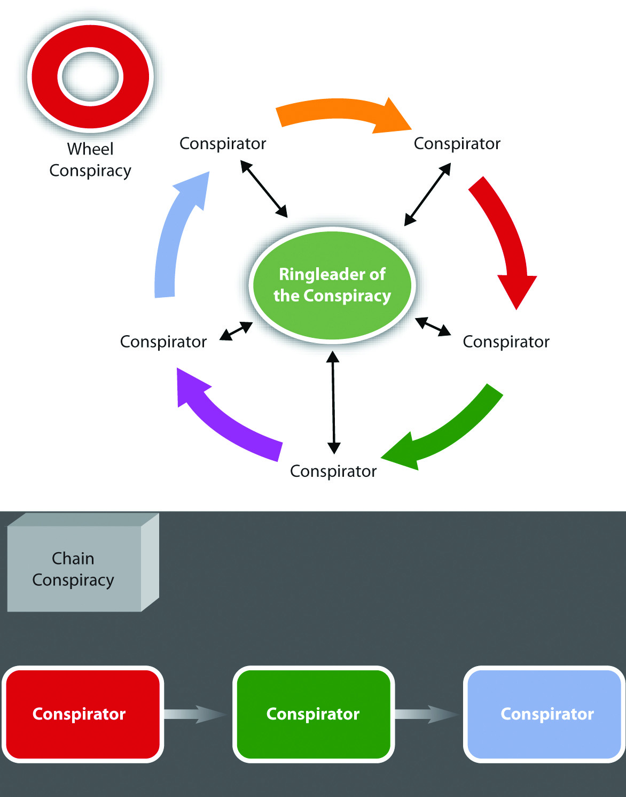
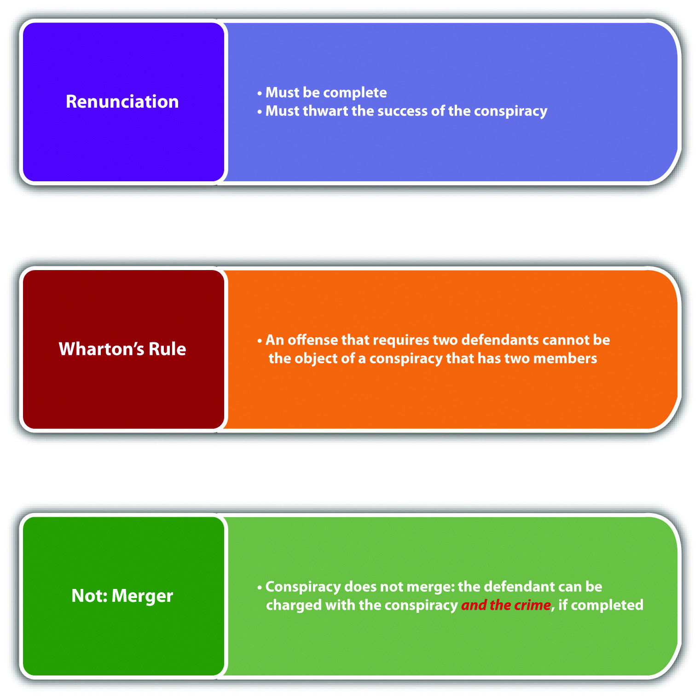
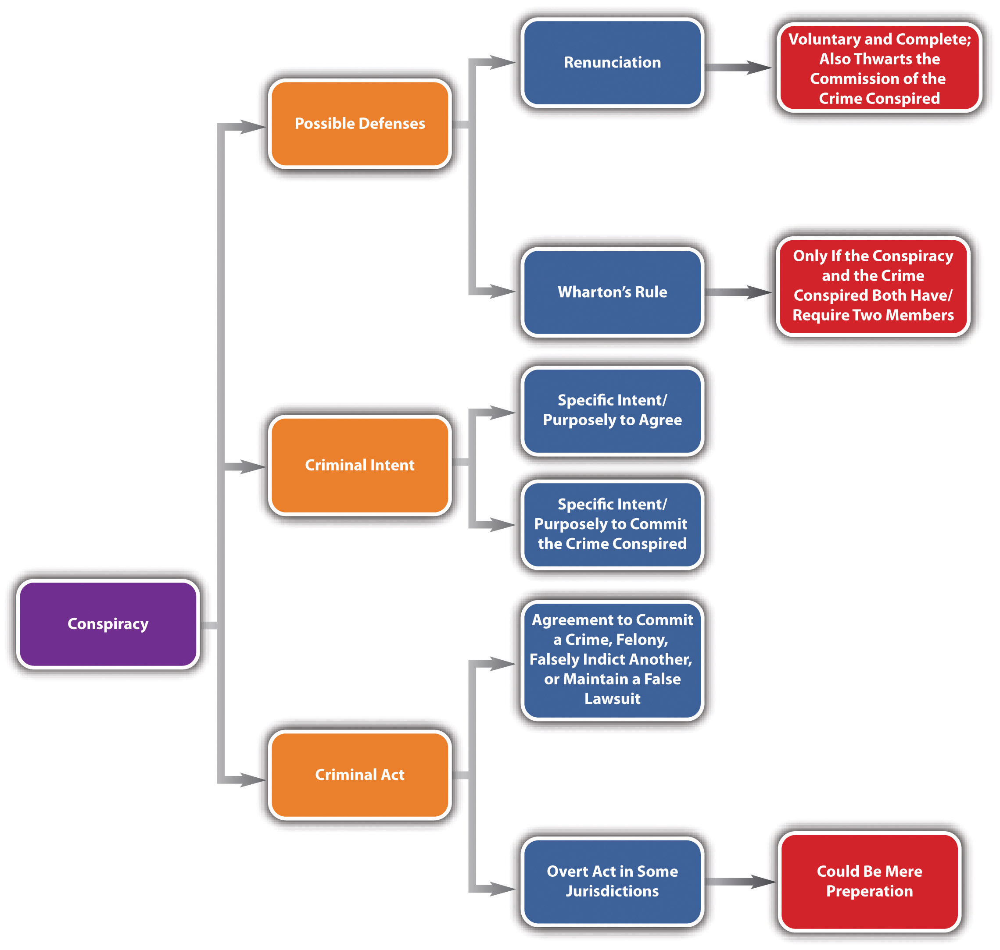

ConspiracyA criminal agreement to commit a crime, felony, or false indictment or to maintain a false lawsuit. punishes defendants for agreeing to commit a criminal offense. Conspiracy is an inchoate crime because it is possible that the defendants never will commit the planned offense. However, a conspiracy is complete as soon as the defendants become complicit and commit the conspiracy act with the conspiracy intent. The rationale for punishing defendants for planning activity, which generally is not sufficient to constitute the crime of attempt, is the increased likelihood of success when defendants work together to plot and carry out a criminal offense.Dennis v. U.S., 341 U.S. 494 (1951), accessed January 3, 2011, http://scholar.google.com/scholar_case?case=13576454585730441281&hl=en&as_sdt=2&as_vis=1&oi=scholarr. If the defendants commit the crime that is the object of the conspiracy, the defendants are responsible for the conspiracy and the completed crime, as is discussed in Section 8.2.4 "Consequences of Conspiracy".
In many jurisdictions, the criminal act element required for conspiracy is an agreement to commit any criminal offense.Fla. Stat. Ann. § 777.04(3), accessed January 1, 2011, http://www.leg.state.fl.us/statutes/index.cfm?App_mode=Display_Statute&Search_String=&URL=0700-0799/0777/Sections/0777.04.html. The agreement does not need to be formal or in writing.State v. Bond, 49 Conn. App. 183 (1998), accessed January 1, 2011, http://caselaw.findlaw.com/ct-court-of-appeals/1255702.html. Some states also criminalize as conspiracy the agreement to falsely indict another for a crime and the agreement to falsely maintain any lawsuit, even a civil lawsuit.Cal. Penal Code § 182(a) (2), (3), accessed January 2, 2011, http://law.justia.com/california/codes/2009/pen/182-185.html. Other states only criminalize as conspiracy the agreement to commit a felony.Tex. Penal Code § 15.02, accessed January 3, 2011, http://law.onecle.com/texas/penal/15.02.00.html.
In some states and federally, an overt act in furtherance of the conspiracy is also required.18 U.S.C. § 371, accessed January 1, 2011, http://codes.lp.findlaw.com/uscode/18/I/19/371. The Model Penal Code requires an overt act only when the planned crime is “other than a felony of the first or second degree” (Model Penal Code § 5.03(5)). The overt act does not have to be criminal and may be planning or preparatory activity that would be insufficient to constitute the criminal act element required for attempt.State v. Verive, 627 P.2d 721 (1981), accessed January 1, 2011, http://wings.buffalo.edu/law/bclc/web/azverive.htm.
Review the example with Melissa and Matthew in Section 8 "Res Ipsa Loquitur Test". In this example, Melissa and Matthew agree to poison the neighbor’s dog because it barks every night. After deciding they will poison the dog, Melissa buys rat poison, and Matthew thereafter coats a filet mignon with it and throws it over the fence into the neighbor’s yard. In a jurisdiction that defines the criminal act element for conspiracy as an agreement between two or more to commit a criminal offense, Melissa and Matthew probably committed the conspiracy criminal act as soon as they agreed to poison the dog. Their agreement could be verbal and does not need to be formal or in writing. If Melissa and Matthew are in a jurisdiction that requires an overt act in furtherance of the conspiracy, Melissa and Matthew probably have not committed the conspiracy criminal act until Melissa buys the rat poison. Note that the purchase of the rat poison is not sufficient to constitute the criminal act element required for attempted destruction of property or animal cruelty, as discussed in Section 8 "Res Ipsa Loquitur Test". However, it would likely be enough to support the conspiracy to commit destruction of property or animal cruelty.
The essence of conspiracy is agreement, which requires two or more parties. However, the modern approach is that a conspiracy may be formed as long as one of the parties has the appropriate intent.Ind. Code § 35-41-5-2(5), accessed January 1, 2011, http://www.in.gov/legislative/ic/2010/title35/ar41/ch5.html. Pursuant to this unilateral view of conspiracy, a conspiracy may exist between a defendant and a law enforcement decoy who is pretending to agree.
In the majority of jurisdictions, the criminal intent element required for conspiracy is specific intent or purposely to agree with another to commit the crime at issue.Connecticut Criminal Jury Instructions 3.3-1, accessed January 1, 2011, http://www.jud.ct.gov/ji/criminal/part3/3.3-1.htm. As the Model Penal Code states, “[a] person is guilty of conspiracy…if with the purpose of promoting or facilitating its commission he: (a) agrees with such other person…that they…will engage in conduct which constitutes such crime” (Model Penal Code § 5.03(1) (a)). This intent has two components. The prosecution must prove that the conspirator intended to agree and also intended to commit the underlying offense.State v. Lewis, 220 Conn. 602 (1991), accessed January 2, 2011, http://scholar.google.com/scholar_case?case=6997065715061309373&hl=en&as_sdt=2&as_vis=1&oi=scholarr.
Shelley and Sam meet at a bar and discuss their lack of finances. Shelley mentions that she and her friend Steffy work at a convenience store. Sam asks Shelley if she would like to help him rob the convenience store when Steffy is working. Shelley agrees. The two plan the robbery. Shelley and Sam agree that Shelley will drive the getaway car on the appointed date and time. Shelley informs Sam that Steffy is extremely meek and fearful and will readily hand over cash out of the cash register if Sam uses a fake handgun. Shelley and Sam probably have the criminal intent element required for conspiracy. Shelley and Sam have the intent to agree to work together because they both need each other to successfully complete the convenience store robbery. In addition, Shelley and Sam have the intent to successfully commit the robbery because they both want the money the robbery will produce. Thus if no overt act is required in their jurisdiction, Shelley and Sam most likely have completed the crime of conspiracy and may be prosecuted for this offense whether or not the robbery actually takes place.
Similar to accomplice liability, the acquittal of or failure to prosecute one party to the conspiracy does not relieve a coconspirator from criminal responsibility in many states.Tex. Penal Code § 15.02(c), accessed January 3, 2011, http://law.onecle.com/texas/penal/15.02.00.html. In addition, a coconspirator does not need to know every other coconspirator to be accountable as a member of the conspiracy.Neb. Rev. Stat. Ann. § 28-202(2), accessed January 3, 2011, http://law.justia.com/nebraska/codes/2006/s28index/s2802002000.html. As long as the conspiracy defendant is aware that other coconspirators exist, the mens rea for conspiracy is present. As the Model Penal Code states, “[i]f a person guilty of conspiracy…knows that a person with whom he conspires to commit a crime has conspired with another person or persons to commit the same crime, he is guilty of conspiring with such other person or persons, whether or not he knows their identity” (Model Penal Code § 5.03(2)). Large-scale conspiracies, such as conspiracies to distribute contraband or illegal firearms, may result in each member sharing criminal responsibility for the conspiracy and every separate conspiracy transaction.
A conspiracy that has more than one criminal objective still can be just one conspiracy. Under the Model Penal Code, “[i]f a person conspires to commit a number of crimes, he is guilty of only one conspiracy so long as such multiple crimes are the object of the same agreement or continuous conspiratorial relationship” (Model Penal Code § 5.03(3)).
It is useful to understand two basic large-scale conspiracy organizational formats: wheel and chain conspiracies. A wheel conspiracyA conspiracy where each member is connected to one central coconspirator. consists of a single conspirator, generally the ringleader who is interconnected to every other coconspirator. The ringleader is the hub; the other coconspirators are the spokes of the wheel. An example of a wheel conspiracy would be a mob boss linked to individual members of the mob following his or her commands. A chain conspiracyA conspiracy where each member is interconnected in a linear fashion. consists of coconspirators connected to each other like links in a chain but without a central interconnected ringleader. An example of a chain conspiracy is a conspiracy to manufacture and distribute a controlled substance, with the manufacturer linked to the transporter, who sells to a large-quantity dealer, who thereafter sells to a smaller-quantity dealer, who sells to a customer. Whether the conspiracy is wheel, chain, or otherwise, if the jurisdiction has a statute or common-law rule that each member does not need to personally know every other member as discussed previously, the coconspirators may be criminally responsible for the conspiracy and the crime(s) it furthers.
Figure 8.5 Comparison of Wheel and Chain Conspiracies
In some states and federally, individuals who enter into a conspiracy are criminally responsible for every reasonably foreseeable crime committed in furtherance of the conspiracy.U.S. v. Castaneda, 9 F.3d 761 (1993), accessed January 3, 2011, http://scholar.google.com/scholar_case?case=13576116398000833345&hl=en&as_sdt=2&as_vis=1&oi=scholarr. This rule is called the Pinkerton ruleA rule that allows a defendant to be convicted of conspiracy and every foreseeable crime committed in furtherance of the conspiracy., based on the US Supreme Court case that created it (Pinkerton v. U.S., 328 U.S. 640 (1946).). One factor used to determine foreseeability is the degree of the defendant’s involvement in the conspiracy. A defendant who plays a minor role is less likely to be criminally responsible than a defendant who has a more substantive involvement.U.S. v. Castaneda, 9 F.3d 761 (1993), accessed January 3, 2011, http://scholar.google.com/scholar_case?case=13576116398000833345&hl=en&as_sdt=2&as_vis=1&oi=scholarr.
Review the example in Section 8 "Example of Conspiracy Intent" with Shelley and Sam. Assume that on the night of the convenience store robbery, Lucy, an armed, off-duty police officer, wanders into the store to purchase cigarettes at the moment Sam pulls out his fake handgun. Lucy yanks her concealed handgun out of her waistband and tells Sam to drop the weapon. Jolene, another customer in the store, observes the two pointing guns at each other and suffers a fatal heart attack. In many jurisdictions, both Shelley and Sam probably could be criminally responsible for conspiracy to commit robbery, attempted robbery, and the murder of Jolene. Shelley and Sam attempted to commit the robbery in furtherance of the conspiracy. Both played a major role in the conspiracy and the attempted robbery. Thus both are accountable for the foreseeable consequences. Robbery is a crime of violence, so a death that occurs during a robbery is foreseeable, even though Sam is armed with only a pretend handgun. Thus Shelley and Sam may be charged with and convicted of Jolene’s murder, which is most likely felony murder. Felony murder is discussed in detail in Chapter 9 "Criminal Homicide".
A criminal offense that requires two parties cannot be the object of a conspiracy that consists of two parties. This rule is called Wharton’s ruleA rule that creates a judicial presumption prohibiting a conviction for conspiracy and the crime it furthers if the conspiracy has only two members and the crime it furthers requires two members. Also called the concert of action rule., or the concert of action rule.USLegal, “Definition of Wharton’s Rule,” USLegal.com website, accessed January 3, 2011, http://definitions.uslegal.com/w/whartons-rule. However, a statute can expressly criminalize a conspiracy to commit any crime, abrogating the rule. Currently, Wharton’s rule can operate as a judicial presumption, to be applied in the absence of legislative intent to the contrary.Ianelli v. U.S., 420 U.S. 770, 785 (1975), accessed January 3, 2011, http://scholar.google.com/scholar_case?case=16942118715212641737&hl=en&as_sdt=2&as_vis=1&oi=scholarr.
Joanne and Robert conspire with Don, Joanne’s pimp, to engage in prostitution. Joanne and Robert get caught in the act of engaging in prostitution by Edward, a police officer. Wharton’s rule probably does not apply in this case. Although engaging in prostitution requires two parties, the conspiracy to engage in prostitution has three members—Don, Joanne, and Robert. Thus Wharton’s rule is likely inapplicable, and Don, Joanne, and Robert might have committed conspiracy to engage in prostitution. Note that if only Joanne and Robert conspire to engage in prostitution, Wharton’s rule may act as a judicial presumption that they cannot commit conspiracy and the crime it furthers.
One potential affirmative defense to conspiracy is renunciationAn affirmative defense to conspiracy in some jurisdictions if the defendant voluntarily and completely renounces the conspiracy and thwarts the crime that is its object.. Similar to voluntary abandonment in attempt, renunciation can operate as a defense to conspiracy in some jurisdictions if the defendant completely and voluntarily renounces the conspiracy.N.J. Stat. § 2c: 5-2e, accessed January 4, 2011, http://law.onecle.com/new-jersey/2c-the-new-jersey-code-of-criminal-justice/5-2.html. The renunciation must also thwart the crime that is the object of the conspiracy. The Model Penal Code allows the defense and provides, “It is an affirmative defense that the actor, after conspiring to commit a crime, thwarted the success of the conspiracy, under circumstances manifesting a complete and voluntary renunciation of his criminal purpose” (Model Penal Code § 5.03(6)).
Review the example with Shelley and Sam in Section 8 "Example of Conspiracy Intent". In this example, Shelley and Sam agree to commit a robbery at the convenience store where Steffy is a cashier. Adjust the example so that Shelley has a change of heart and contacts law enforcement about the robbery before she drives Sam to the convenience store in the getaway car. Law enforcement officers ask Shelley to help them apprehend Sam, and she agrees. Shelley drives Sam to the convenience store as planned. Two law enforcement officers dress in plainclothes and pretend to be shopping in the convenience store when Sam arrives. As soon as Sam pulls out his fake handgun, they arrest him. If Shelley is in a jurisdiction that recognizes the renunciation defense, she probably will have a valid defense to a charge of conspiracy. Although Shelley committed the criminal act for conspiracy with the requisite criminal intent, she voluntarily and completely renounced the conspiracy and thwarted the crime that was its object. Thus Shelly has likely met the requirements of renunciation, and only Sam may be charged with a crime or crimes in this scenario.
At early common law, conspiracy, which was a misdemeanor, merged into the completed felony that was its object. The merger was based on the significant procedural differences between misdemeanor and felony trials. As the differences diminished, so did the merger concept. In modern times, conspiracy does not merge into the completed offense.Callanan v. U.S., 364 U.S. 587 (1961), accessed January 4, 2011, http://scholar.google.com/scholar_case?case=10261023883092961366&hl=en&as_sdt=2&as_vis=1&oi=scholarr. Thus a defendant can be charged with and convicted of conspiracy and any crime the conspiracy furthers, as is discussed more fully in Section 8.2.4 "Consequences of Conspiracy".
Figure 8.6 Defenses to Conspiracy
Some states grade conspiracy the same as the most serious offense that is the conspiracy’s object.18 Pa. Cons. Stat. § 905, accessed January 4, 2011, http://law.onecle.com/pennsylvania/crimes-and-offenses/00.009.005.000.html. Others grade conspiracy lower than the most serious conspired offense and do not criminalize the conspiracy to commit a simple, low-level misdemeanor.Tenn. Code Ann. §39-12-107(c), accessed January 4, 2011, http://law.justia.com/tennessee/codes/2010/title-39/chapter-12/part-1/39-12-107. Another view is to set a separate penalty for the conspiracy to commit specific crimes.Cal. Penal Code § 182, accessed January 4, 2011, http://law.onecle.com/california/penal/182.html. It is not unconstitutional to punish conspiracy more severely than the crime conspired.Clune v. U.S., 159 U.S. 590 (1895), accessed January 4, 2011, http://scholar.google.com/scholar_case?case=14126191414675975192&q= Clune+v.+US&hl=en&as_sdt=2002&as_vis=1.
In response to an increase in organized crime, the federal government enacted the Racketeer Influenced and Corrupt Organization Act (RICO)A federal statute that criminalizes organized crime. (18 U.S.C. §§ 1961-1968)). RICO provides extensive criminal penalties and also a civil cause of action for organized crime and includes all offenses that are criminal under state or federal law. Although RICO was originally intended to focus on sophisticated criminal businesses such as loan sharking, mafia, and high-stakes gambling operations,G. Robert Blakey, “RICO: The Genesis of an Idea,” Abstract, Social Science Research Network website, accessed January 4, 2011, http://papers.ssrn.com/sol3/papers.cfm?abstract_id=1142930. its modern application is much broader and encompasses many white-collar crimes and small-time conspiracies. A criminal organization always involves more than one member, and at the very least rudimentary planning, so conspiracy is a common RICO charge and is often easier to prove than a completed criminal offense. Recently, RICO has been criticized as being overused and applied in a manner inconsistent with its original purpose, especially when it targets smaller, low-member criminal “organizations.” Some examples of highly publicized RICO defendants are Hell’s Angels,Keith Zimmerman, Kent Zimmerman, “Hell’s Angel: The Life and Times of Sonny Barger and the Hell’s Angels Motorcycle Club,” accessed January 4, 2011, http://www.organized-crime.de/revbar01sonnybarger.htm. Catholic priests in sex abuse cases,Greg Smith, “Courts: Lawsuit Accuses Diocese of Hiding Sex Abuse,” Norwich Bulletin website, accessed January 4, 2011, http://www.norwichbulletin.com/lifestyles/spirituality/x497774422/Courts-Lawsuit-accuses-diocese-of-hiding-sex-abuse. and Major League Baseball.“Arbitration Ruling Effectively Ends Loria RICO Suit,” Sportsbusinessdaily.com website, accessed June 28, 2011, http://www.sportsbusinessdaily.com/Daily/Issues/2004/11/Issue-46/Franchises/Arbitration-Ruling-Effectively-Ends-Loria-Rico-Suit.aspx.
Table 8.1 Comparison of Conspiracy and Accomplice Liability
| Type of Liability | Criminal Act | Criminal Intent |
|---|---|---|
| Conspiracy | Agreement to commit a crime, false criminal indictment, false lawsuit, or felony; some jurisdictions require an overt act in furtherance of the conspiracy | Specific intent or purposely to agree to commit the specified offense(s) |
| Accomplice | Aid, assist commission of a crime | Specific intent or purposely or general intent or knowingly, depending on the jurisdiction |
Figure 8.7 Diagram of Conspiracy
Judge Sentences Tom DeLay to Three Years in Prison
Tom DeLay, former US House Majority Leader, was convicted of conspiracy and money laundering.Paul Meyer, “Tom DeLay is sentenced to three years,” Los Angeles Times website, accessed August 15, 2011, http://articles.latimes.com/2011/jan/11/nation/la-na-tom-delay-20110111. His verdict is shown in this video:
Answer the following questions. Check your answers using the answer key at the end of the chapter.
Did the Coconspirators Intend to Commit Murder?
Read People v. Han, 78 Cal. App. 4th 797 (2000). The case is available at this link: http://caselaw.lp.findlaw.com/data2/californiastatecases/g023433.pdf.
In Han, a lurid California case involving twins, three defendants were convicted of burglary, false imprisonment, and conspiracy to commit murder.Beloit Daily News, “‘Evil Twin’ Found Guilty of Plotting to Kill Sister,” Beloit Daily News website, accessed January 28, 2011, http://www.beloitdailynews.com/articles/1997/11/21/export7262.txt. Two of the codefendants appealed on the grounds that the evidence was insufficient to support the verdict of conspiracy to commit murder. The codefendants claimed that the only direct evidence of intent to commit murder were statements made by the defendant Jeen Han before the conspiracy was formed, and defendant Han could not conspire with herself.
The defendant Jeen Han and her twin sister Sunny had a long history of violence against each other.People v. Han, 78 Cal. App. 4th 797, 802 (2000), accessed January 28, 2011, http://caselaw.lp.findlaw.com/data2/californiastatecases/g023433.pdf. Defendant Han became enraged when Sunny pressed charges against her for theft. Testimonial evidence presented at trial showed that she expressed the intent to kill her twin before any conspiracy was formed.People v. Han, 78 Cal. App. 4th 797, 803 (2000), accessed January 28, 2011, http://caselaw.lp.findlaw.com/data2/californiastatecases/g023433.pdf. She actively sought out individuals to help her with her sister’s murder.People v. Han, 78 Cal. App. 4th 797, 803 (2000), accessed January 28, 2011, http://caselaw.lp.findlaw.com/data2/californiastatecases/g023433.pdf. Thereafter, she met up with her teenaged cousin and a friend, the other two codefendants. The three broke into Sunny Han’s apartment, tied up Sunny and her roommate at gunpoint and placed them in the bathtub, and then ransacked Sunny’s purse. Receipts produced at trial indicated a purchase of garbage bags, twine, utility tape, and Pine Sol previous to the incident. The Court of Appeal of California held that although circumstantial, the evidence supported the verdict. The court reasoned that the purchase of the twine, garbage bags, utility tape, and Pine Sol, combined with the actions of the defendants in breaking into the apartment, tying up the two roommates at gunpoint, and putting them in the bathtub, could be interpreted as circumstantial evidence of intent to kill, and the trier of fact did not err in making that conclusion.People v. Han, 78 Cal. App. 4th 797, 804, 805 (2000), accessed January 28, 2011, http://caselaw.lp.findlaw.com/data2/californiastatecases/g023433.pdf.
Check your answer using the answer key at the end of the chapter.